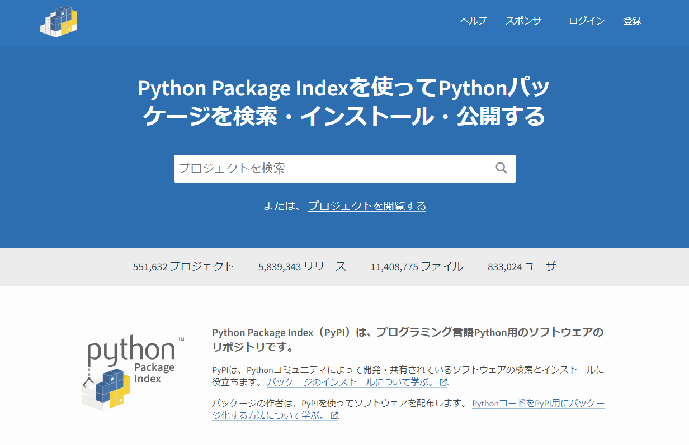

第10回 Pythonのライブラリ・パッケージ¶
Pythonの拡張機能（ライブラリ）です。 「配列」や「線形代数」など数学的な言葉が出てきます
🎯 到達目標¶
ライブラリ・モジュールの概念を理解し、
import文を使って正しく読み込むことができる。NumPy配列（ndarray） を作成し、リストよりも効率的なデータ管理ができる。
NumPyを使って、要素ごとの演算や統計量の算出（平均、合計など） ができる。
真理値配列 を用いて、「売上が目標を超えた日だけ抽出する」といったデータ分析特有の処理ができる。
練習問題のGoogle Colab起動¶

上記の「Open In Colab」をクリックして、Google Colabを起動させてください
[ファイル] → [ドライブにコピーを保存] を選択して、Googleドライブにコピーを保存してください
保存が成功すると，Googleドライブの「マイドライブ」 →「Colab Notebooks」にコピーしたファイルが保存されます。
GoogleドライブにコピーしたGoogle ColabのNotebooksを開いてください
開いたGoogle ColabのNotebooksで作業をしてください
イントロダクション：モジュール・ライブラリとは？¶
モジュール・パッケージ・ライブラリ¶
Pythonのすごいところは、世界中のエンジニアが作った「便利な道具箱（拡張キット）」が無料で公開されていることです。
モジュール: 便利な関数などを1つのファイルにまとめたもの。（例：カフェの「レジ打ち機能」）
パッケージ / ライブラリ: 複数のモジュールをさらに大きくまとめたもの。（例：カフェの「店舗運営まるごとセット」）
モジュール¶
1つのファイルに記述していると、プログラムが長くなるとどこに何を書いているのかがわからなくなってきます。
処理が長く、複雑になると、複数のファイルに処理を分割する必要があります。役割ごとにファイルを分割することで、それぞれどういった処理をするものかを明確にできます。
Pythonでは他のPythonファイルや関数をインポート（import）して再利用できます。処理を複数のファイルに分割し、必要な処理をインポートして使います。
importの使い方（モジュールのインポート）¶
別のファイルをインポートするには import 文を使います。
拡張機能を使うには、Pythonに「この道具箱を持ってきて！」とお願いする必要があります。それが import（インポート）文です。
import 〇〇: 〇〇という道具箱を丸ごと持ってくる。import 〇〇 as △△: 〇〇という道具箱に、**短いあだ名（△△）**をつけて持ってくる。from 〇〇 import ××: 〇〇という道具箱の中から、××という特定の道具だけを取り出して持ってくる。
import calc
calc というモジュールがインポートされました。
Pythonファイルをインポートすることでモジュール（module）として再利用できます。
calc モジュールから add() 関数を使うには、 calc.add() と呼び出します。
calc.add(1, 2)
関数のインポート¶
add() 関数を直接インポートするには、 from ＜モジュール＞ import ＜インポート対象＞ 文を使います。
from ＜モジュール＞ の部分にモジュール、 import ＜インポート対象＞ の部分にインポートの対象を書きます。
from calc import add
add(1, 2)
別名をつける¶
インポートした関数やモジュールに別名をつけるには as を使います。
関数やモジュールが頻繁に使われるのに名前が長い場合に使われます。
import <インポート対象> as <別名> のように別名を指定します。
calc モジュールに別名 c をつけてインポートするにはimport as のようにします。
import calc as c
c.add(1, 2)
複数の対象をインポート¶
calc モジュールから add() 、 sub() 関数を一度にインポートするには、
import 文でインポート対象をカンマ区切りで指定します。
from calc import add, sub
add(1, 2)
sub(2, 1)
また、 import (functions2) のように括弧を使っても指定できます。
インポート対象が多い場合は括弧を使った書き方のほうが可読性が高いので、こちらを使います。
from calc import (add, sub)
標準ライブラリの利用¶
Python自体も標準でモジュールを提供しています。これら標準で提供されているモジュールをまとめて標準ライブラリと呼びます。
必要な処理をすべて自分で実装するのでなく、積極的に標準ライブラリを利用しましょう。
標準ライブラリを利用すると重複する実装が減り、コードの記述量を大幅に削減できます。
日付を扱うモジュール (datetime)¶
標準ライブラリの1つ datetime モジュールを取り上げます。
datetime は日付や時刻を簡単に扱うことができるモジュールです。
ここでは例として日付の計算をします。
datetime.date() コンストラクタを使って日付を意味するオブジェクトを生成できます。
引数として年、月、日を指定します。
import datetime
d = datetime.date(2016, 12, 23)
print(d.year, d.month, d.day)
また、 datetime.date.today() メソッドを使うと今日の日付を取得することができます。
today = datetime.date.today()
print(today)
ここで、自分が生まれてから今日までに何日経過したのかを計算してみましょう。
自分で実装しようとすると、月ごとに日数が違う、うるう年の計算など面倒な計算が必要となりますが、
datetime.date を使うと面倒な部分をモジュールが肩代わりしてくれます。
birthday = datetime.date(2008, 12, 3) # Python 3.0のリリース日
today = datetime.date.today()
delta = today - birthday # 日付や時刻の差を表すdatetime.timedeltaオブジェクト
print(delta.days) # 実行する日によって結果が異なる
タイムゾーン（Time Zone）とは？¶
Pythonの datetime オブジェクトにおけるタイムゾーンとは、「その日時が地球上のどこの標準時（地域）を基準にしているか」を表す情報のことです。
pythonにおいて時刻を扱うdatetiem.datetimeとdatetime.timeオブジェクトにはnaiveとawareという概念があります。 これは、生成されたオブジェクトがタイムゾーンの情報を持っているかどうかを示す属性値であり、タイムゾーンの情報を持っていればaware, なければnaiveになります。
Pythonの datetime には、タイムゾーンの有無によって2つの状態があります。
naive（ネーブ）オブジェクト
タイムゾーン情報を持たない日時です。
「12:00」という情報だけで、それが日本（JST）の12時なのか、ロンドン（UTC）の12時なのか区別がつきません。バグの原因になりやすいため、基本的には次の「aware」を使うことが推奨されます。
aware（アウェア）オブジェクト
タイムゾーン情報（tzinfo）を持った日時です。
「日本時間の12:00」のように地球上の特定の瞬間を一意に指し示すことができるため、世界中の異なる地域で時間を比較したり、正しく変換したりできます。
主要な標準時
UTC（協定世界時）：世界の基準となる、時差がゼロの標準時です。
UTCは、イギリスのロンドン近郊を通る「本初子午線（経度0度）」を基準としています。
JST（日本標準時）：日本国内の標準時です。UTCより9時間進んでいます（UTC+9）。
例1
import datetime
# naive（ネーブ）オブジェクト
naive = datetime.datetime.now()
print(naive)
print(naive.tzinfo)
# aware（アウェア）オブジェクト
aware_utc = datetime.datetime.now(datetime.timezone.utc)
# datetime.datetime.utcは世界標準時の情報を持ったitmezoneインスタンス
print(aware_utc)
print(aware_utc.tzinfo)
例2
from datetime import datetime
from zoneinfo import ZoneInfo
# 1. 現在の日本時間（JST）を取得する
# タイムゾーンに "Asia/Tokyo" を指定します
jst_now = datetime.now(ZoneInfo("Asia/Tokyo"))
print(f"日本時間 (JST): {jst_now}")
# 出力例: 2026-07-29 23:57:00+09:00 （末尾の +09:00 がJSTの証）
# 2. 現在の協定世界時（UTC）を取得する
utc_now = datetime.now(ZoneInfo("UTC"))
print(f"世界基準 (UTC): {utc_now}")
# 出力例: 2026-07-29 14:57:00+00:00 （日本より9時間前の時間になります）
# 3. タイムゾーンを別の地域に変換する（astimezoneメソッド）
# 日本時間を、アメリカ・ニューヨークの時間（EST/EDT）に変換します
ny_time = jst_now.astimezone(ZoneInfo("America/New_York"))
print(f"ニューヨーク時間: {ny_time}")
# 4. 2つの地域の日時を比較する（時差が違っても正しく判定されます）
# 日本の23:57と、UTCの14:57は「地球上で同じ瞬間」を指すため True になります
print("同じ瞬間か？:", jst_now == utc_now) # 出力: True
zoneinfo を使用する際、標準のタイムゾーンデータベース（tzdata）が見つからずにエラーが出る場合があります。その場合は、以下のコマンドを実行してモジュールをインストールしてください。
Google Colabの場合
!pip install tzdata
datetime モジュールは他にも時刻を扱う datetime.time, 日付と時刻両方を扱う datetime.datetime など日付や時刻の計算に便利な関数がたくさんあります。
詳しくはPythonの公式ドキュメントの「 datetimeモジュール 」を参考にしてください。
練習問題¶
💡 覚えるためのワンポイント¶
strftime (string format time): 日付データ ➔ 文字列へ変換
strptime (string parse time): 文字列 ➔ 日付データへ変換
timedelta: 日数の計算（加減算）に使用
練習問題 1（基礎：現在の時刻とフォーマット指定）
現在のシステム日時を取得し、"2026年07月30日 12時00分" のような形式の文字列に変換して出力してください。
👉 解答例を見る（ここをクリックして展開）
練習問題 1（解答）
strftime の使い方
datetime.now() で現在日時を取得し、.strftime(フォーマット) を使って指定した文字列形式に変換します。
from datetime import datetime
now = datetime.now()
# %Y: 4桁年, %m: 2桁月, %d: 2桁日, %H: 24時間表記の時, %M: 分
formatted_now = now.strftime("%Y年%m月%d日 %H時%M分")
print(formatted_now)
練習問題 2（応用：文字列から datetime オブジェクトへの変換）
文字列 "2025-12-25 18:30:00" があります。
この文字列を datetime オブジェクトに変換し、「月」と「日」だけを取り出して
"12月25日" と表示させてください。
👉 解答例を見る（ここをクリックして展開）
練習問題 2（解答）
strptime の使い方
文字列を日付データとして扱いたいときは datetime.strptime() を使います。
変換後は .month や .day などの属性で数値として簡単にアクセスできます。
from datetime import datetime
date_str = "2025-12-25 18:30:00"
# 文字列を datetime オブジェクトに変換 (strptime = string parse time)
dt_obj = datetime.strptime(date_str, "%Y-%m-%d %H:%M:%S")
print(f"{dt_obj.month}月{dt_obj.day}日") # 12月25日
練習問題 3（日付の計算：未来・過去の日付）
今日の日付から 「100日後の日付」 と 「3週間前の日付」 を計算して、
それぞれ "YYYY-MM-DD" の形式で表示させてください。
👉 解答例を見る（ここをクリックして展開）
練習問題 3（解答）
timedelta による加減算
日付の足し算・引き算には timedelta を使用します。
days や weeks などの引数を指定できます。
from datetime import date, timedelta
today = date.today()
# 100日後
after_100_days = today + timedelta(days=100)
# 3週間（21日）前
before_3_weeks = today - timedelta(weeks=3)
print("100日後:", after_100_days.strftime("%Y-%m-%d"))
print("3週間前:", before_3_weeks.strftime("%Y-%m-%d"))
練習問題 4（日付の差分計算：日数カウント）
オリンピックの開催日 target_date = datetime.date(2028, 7, 14) と、
今日の日付（today = datetime.date.today()）の差を計算し、「あと何日か」 を
出力してください。
👉 解答例を見る（ここをクリックして展開）
練習問題 4（解答）
日付同士の引き算
date や datetime 同士を引き算すると、結果は timedelta オブジェクトになります。
.days 属性を見ることで差分の角の日数を取得できます。
from datetime import date
today = date.today()
target_date = date(2028, 7, 14)
# date オブジェクト同士を引き算すると timedelta オブジェクトが返る
diff = target_date - today
print(f"目標の日まであと {diff.days} 日です！")
練習問題 5（発展：月の最終日を取得する）
ある年と月（例: 2026年2月）が与えられたときに、その月の最終日（月末の日付）を
求める処理を書いてください。
※ヒント: timedelta を使うか、翌月の1日から1日引き算するなどのアイデアが使えます。
👉 解答例を見る（ここをクリックして展開）
練習問題 5（解答）
月末日の動的計算
月によって「30日」「31日」「28日（うるう年は29日）」と日数が異なるため、
「翌月の1日を作ってから 1 日引く（timedelta(days=1)）」というロジックを使うと、
うるう年も含めて確実に月末の日付が計算できます。
from datetime import date, timedelta
def get_last_day_of_month(year, month):
# 翌月の1日を作成する（※12月の場合は翌年1月にする調整）
if month == 12:
next_month = date(year + 1, 1, 1)
else:
next_month = date(year, month + 1, 1)
# 翌月1日から1日引くと、今月の最終日になる
last_day = next_month - timedelta(days=1)
return last_day
# テスト (2026年2月末)
print(get_last_day_of_month(2026, 2)) # 2026-02-28
正規表現（regular expression）モジュール¶
正規表現は文字列などを扱う上でとても便利です。ここでは、その基本的な使い方を紹介します。 ここでは正規表現の初歩とPythonでの扱い方を紹介します。
Pythonでの正規表現
次に標準ライブラリの1つ re モジュールを扱います。
re モジュールはPythonで正規表現を扱うためのモジュールです。
import re # Pythonで正規表現を扱うモジュール
例
import re
m = re.search('(P(yth|l)|Z)o[pn]e?', 'Python')
正規表現とは、文字列のパターンを表す式です。 文字列が正規表現にマッチするとは、文字列が正規表現の表すパターンに適合していることを意味します。 また、正規表現が文字列にマッチするという言い方もします。
たとえば、正規表現 abc は文字列 abcde （の部分文字列 abc）にマッチします。 正規表現に文字列がマッチしているかどうかを調べることのできる関数に match があります。 match は、指定した 正規表現A が 文字列B（の先頭部分）にマッチするかどうか調べます。
re.match(正規表現A, 文字列B)
match1 = re.match('abc', 'abcde') #マッチする
print(match1)
match1 = re.match('abc', 'ababc') #マッチしない
print(match1)
match では、マッチが成立している場合、matchオブジェクトと呼ばれる特殊なデータを返します。
マッチが成立しない場合、None を返します。
if re.match('abc', 'abcde'): #マッチする
print('正規表現abcが文字列abcdeにマッチする')
else:
print('正規表現abcが文字列abcdeにマッチしない')
if re.match('abc', 'ababc'): #マッチしない
print('正規表現abcが文字列ababcにマッチする')
else:
print('正規表現abcが文字列ababcにマッチしない')
マッチが成立している場合、matchオブジェクトには、マッチした文字列の情報が格納されています。
<_sre.SRE_Match object; span=(0, 3), match='abc'>
このオブジェクト内の match という値は、マッチした文字列を、 span という値はマッチしたパターンが存在する、文字列のインデックスの範囲を表します。
正規表現では大文字と小文字は区別されます。たとえば、正規表現 abc は文字列 ABCdef にはマッチしません。勿論、正規表現 ABC も文字列 abcdef にはマッチしません。
match1 = re.match('abc', 'ABCdef')
print(match1)
match1 = re.match('ABC', 'abcdef')
print(match1)
match の3番目の引数として re.IGNORECASE もしくは re.I を指定すると、大文字と小文字を区別せずにマッチするかどうかを調べることができます。
match1 = re.match('abc', 'ABCdef', re.IGNORECASE)
print(match1)
match1 = re.match('ABC', 'abcdef', re.IGNORECASE)
print(match1)
match1 = re.match('ABC', 'ABCdef', re.IGNORECASE)
print(match1)
match1 = re.match('abc', 'ABCdef', re.I)
print(match1)
match1 = re.match('ABC', 'abcdef', re.I)
print(match1)
match1 = re.match('ABC', 'ABCdef', re.I)
print(match1)
match1 = re.match('AbC', 'aBcdef', re.I)
print(match1)
match は文字列の先頭がマッチするかどうか調べますので、次のような場合、matchオブジェクトを返さずに None が返されます。
match1 = re.match('def', 'abcdef')
print(match1)
match1 = re.match('xyz', 'abcdef')
print(match1)
re.match()文字列の先頭しか調べられないです。
re.search()は、指定した 正規表現A が 文字列B に（文字列の先頭以外でも）マッチするかどうか調べることができます。
re.search() は結果を表すマッチオブジェクトを返します。
正規表現にマッチしない場合は、not-match に示すように何も返しません（None を返します。
re.search(正規表現A, 文字列B)
match1 = re.search('abc', 'abcdef')
print(match1)
match1 = re.search('abc', 'ababcd')
print(match1)
match1 = re.search('def', 'abcdef')
print(match1)
search の場合も3番目の引数として re.IGNORECASE、 もしくは re.I を指定することで、大文字と小文字を区別せずにマッチするかどうかを調べることができます。
match1 = re.search('abc', 'ABCdef')
print(match1)
match1 = re.search('DEF', 'abcdef')
print(match1)
match1 = re.search('abc', 'ABCdef', re.IGNORECASE)
print(match1)
match1 = re.search('DEF', 'abcdef', re.I)
print(match1)
match1 = re.search('not', 'It is NOT me.', re.I)
print(match1)
match1 = re.search('NOT', 'It is not mine.', re.I)
print(match1)
文字列の先頭からのマッチを調べたいときには、正規表現の先頭にキャレット (^) をつけてください。また、文字列の最後からマッチさせたいときは、正規表現の最後にドル記号 ($) をつけてください
match1 = re.search('abc', 'ababcd') #キャレットなしだとマッチする
print(match1)
match1 = re.search('^abc', 'ababcd') #キャレットありだとマッチしない
print(match1)
match1 = re.search('def', 'abcdefg') #ドル記号なしだとマッチする
print(match1)
match1 = re.search('def$', 'abcdefg') #ドル記号ありだとマッチしない
print(match1)
match1 = re.search('def$', 'abcdefxyzdef') # 2つあるうちの2番目（最後）の def にマッチする
print(match1)
正規表現は文字列の「パターン」を表すので、1つの正規表現で複数の文字列を表すことも可能です。
たとえば、正規表現 ab と正規表現 de という2つの正規表現を | という記号で繋げた ab|de も正規表現を表します。この正規表現では、ab と de という2つの文字列を表しており、これらのいずれかを含む文字列にマッチします。この | の記号（演算）を**「和、もしくは選択」**といいます。
match1 = re.search('ab|de', 'bcdef')
print(match1)
match1 = re.search('ab|de', 'abcdef')
print(match1)
match1 = re.search('ab|de', 'fgdeab')
print(match1)
match1 = re.search('ab|de', 'acdf')
print(match1)
match1 = re.search('a|an|the', 'I slipped on a piece of the banana.')
print(match1)
match1 = re.search('a|an|the', 'I slipped on the banana.')
print(match1)
match1 = re.search('Good (Morning|Evening)', 'Good Evening, Vietnam.') #正規表現内の（）については下で述べます
print(match1)
match1 = re.search('colo(u|)r', 'That color matches your suit.') #正規表現内の（）については下で述べます
print(match1)
match1 = re.search('colo(u|)r', 'That colour matches your suit.') #正規表現内の（）については下で述べます
print(match1)
上記の3番目の例に注意してください。正規表現 ab | de では ab が de よりも先に記述されていますが、マッチする文字列は文字列上で先に出てきた方（ab ではなく、de）であることに注意してください。
正規表現 abc は、正規表現 a と正規表現 b と正規表現 c という3つの正規表現を繋げて構成された正規表現であり、このように正規表現を繋げて新しい正規表現を作る演算を**「連接」**といいます。
a* は、正規表現 a を0回以上繰り返した文字列とマッチします。この * の演算を**「閉包(へいほう)」**といいます。
match1 = re.search('a*', 'abcdef')
print(match1)
match1 = re.search('a*', 'aabbcc')
print(match1)
match1 = re.search('a*', 'cde')
print(match1)
match1 = re.search('bo*', 'boooo!')
print(match1)
上記の3番目の例において（文字 a が含まれていないにも関わらず）None が返らずに、マッチしているのを不思議に思うかもしれません。しかし、a* は a を0回反復した文字列にもマッチします。この0回反復した文字列とは、長さが0の文字列であり、空列とか空文字列と呼ばれます。文字列 cde の先頭には、空列があると見なせるので、a* が先頭部分にマッチしているのです。
たとえば、正規表現 abb* は、 ab, abb, abbb, … という文字列にマッチします。
match1 = re.search('abb*', 'abcdef')
print(match1)
match1 = re.search('abb*', 'aabbcc')
print(match1)
match1 = re.search('abb*', 'cde')
print(match1)
match1 = re.search('hello*', 'Hi, hellooooo!')
print(match1)
match1 = re.search('hello*', 'Hi, good morning!')
print(match1)
連接、和、閉包という3つの演算を組み合わせることで様々な正規表現を記述することができますが、これらの演算には結合の強さが存在します。たとえば、先に見た ab | cd という正規表現は、 ab もしくは cd という文字列にマッチします（(ab)|(cd) と同じ意味です）。つまり、連接の方が和よりも強く結合しているのです。そこで、丸括弧を使って a(b|c)d とすると、この正規表現は、abd | acd と同じ意味になります。
和（Sum / Union）: 2つ以上のものを「足し算する（合わせる）」こと。
閉包（Closure）: 1つの集まりを「はみ出さないように囲う（閉じる）」こと。
連接（Coherence）: 空間の上で、バラバラな数式たちが「きれいに連動して繋がっている」こと。
match1 = re.search('ab|de', 'fgdeab')
print(match1)
match1 = re.search('(ab)|(de)', 'fgdeab')
print(match1)
match1 = re.search('a(b|d)e', 'fgdeab')
print(match1)
match1 = re.search('a(b|d)e', 'fgadeab')
print(match1)
match1 = re.search('abe|ade', 'fgadeab')
print(match1)
match1 = re.search("(I|i)t('s| is| was)", "It was rainy yesterday, but it's fine today.")
print(match1)
match1 = re.search("(I|i)t('s| is| was)", "It rained yesterday, but it's fine today.")
print(match1)
演算の結合の強さは、「和 < 連接 < 閉包」という順序になっています。これは数学の、「和（＋）< 積(×) < べき」と同じですので、直感的にもわかりやすいと思います。これまでに紹介した連接、和、閉包という3つの演算と結合の順序を明記する丸括弧 () とを組み合わせることでさまざまな正規表現を記述できます。
match1 = re.search('a(bc|b)*', 'defabcxyz')
print(match1)
match1 = re.search('a(bc|b)*', 'bbacbabbbbc')
print(match1)
match1 = re.search('ca(r|t(egory|tle|))', 'What category is this cat in?')
print(match1)
match1 = re.search('ca(r|t(egory|tle|))', 'No, this is not a carpet.')
print(match1)
match1 = re.search('ca(r|t(egory|tle|))', 'We saw a cattle car almost hit the cat.')
print(match1)
match1 = re.search('ca(r|t(egory|tle|))', 'Please locate him.')
print(match1)
match1 = re.search('ca(r|t(egory|tle|))', "Don't play castanets.")
print(match1)
Pythonでは正規表現は文字列によって表していることに注意してください。たとえば、match 関数の第一引数を文字列の変数で置き換えられるということです。
match1 = re.match('abc', 'abcde')
print(match1)
reg1 = 'abc' # 正規表現を文字列で記述する
match2 = re.match(reg1, 'abcde') #match1と同じ結果になる
print(match2)
このことを覚えておくと複雑な正規表現を書くときに、少しずつ分解して記述することができて便利です。
match1 = re.search("(I|i)t('s| is| was)", "It was rainy yesterday, but it's fine today.")
print(match1)
reg1 = '(I|i)t' # 正規表現の前半部分
reg2 = "('s| is| was)" # 正規表現の後半部分
reg3 = reg1 + reg2 # 正規表現を表す2つの文字列を結合する
print(reg3)
match2 = re.search(reg3, "It was rainy yesterday, but it's fine today.")
print(match2)
マッチした部分を取り出す¶
re モジュールでマッチした部分を取り出すには、group() メソッドや findall() 関数を使用します。
コラム: 正規表現の文字列
正規表現の文字列にはPythonのraw文字列を使うのが一般的です。
r プレフィックスをつけてraw文字列を定義します。
raw文字列（生の文字列）とは、エスケープシーケンス（\n や \t など）を特別な意味として解釈せず、書いた文字をそのまま扱う文字列のことです． 正規表現中にバックスラッシュを使う際に \ と書く必要がなくなります。
なぜ必要なのか？
通常、Pythonの文字列で \n と書くと「改行」を意味します。しかし、正規表現やWindowsのファイルパスでは \d（数字）や \（ディレクトリの区切り）のように、バックスラッシュ（\）そのものをたくさん使います。raw文字列を使わない場合、バックスラッシュ自体を表現するために \ と2つ重ねて書く必要があり、コードが非常に読みづらくなります。raw文字列を使えば、バックスラッシュをそのまま1つ書くだけで済みます。
最初にマッチした部分全体を取り出す¶
最初にマッチした部分全体を取り出すre.search() や re.match() が返すマッチオブジェクトに対して、group()（または group(0)）を呼び出します
import re
# 最初に見つかる「数字+円」のパターンを検索
# r'\d+円' は、テキストの中から「1回以上繰り返す数字の後に『円』が続く部分を検索
text = "Apple: 100円, Banana: 200円"
match = re.search(r'\d+円', text)
if match:
print(match.group()) # 出力: 100円
カッコ () でグループ化した部分だけを取り出す¶
正規表現内で () を使うと、特定の箇所だけをピンポイントで抽出できます。group(1)、group(2) のように引数に番号を指定します。
import re
# カッコの中の英数字だけをグループ化
# (\w+) は、「1文字以上の英数字やアンダースコア（_）の塊」を見つけ、さらにそれを「後から取り出せるように記憶する（グループ化）」という意味
text = "ユーザー名は user_123 です。"
match = re.search(r'ユーザー名は (\w+) です', text)
if match:
print(match.group(0)) # 一致した全体: ユーザー名は user_123 です
print(match.group(1)) # 1つ目のカッコ内: user_123
マッチするすべての部分をリストでまとめて取り出す¶
import re
# すべての数字部分をリストで取得
# r'\d+' は、テキストの中から「1桁以上の連続した数字（数字の塊）」をすべて見つける
text = "Apple: 100円, Banana: 200円, Orange: 300円"
prices = re.findall(r'\d+', text)
print(prices) # 出力: ['100', '200', '300']
※ re.findall() のパターン内に () が含まれている場合は、カッコ内のグループにマッチした部分だけがリスト化されます。
マッチした位置（インデックス）を取得する¶
文字列のどこからどこまでがマッチしたかを知りたい場合は、start(), end(), span() メソッドを使用します。
import re
text = "Hello World"
match = re.search(r'World', text)
if match:
print(match.start()) # 開始位置のインデックス: 6
print(match.end()) # 終了位置のインデックス: 11
print(match.span()) # 開始と終了のタプル: (6, 11)
普通の文字は全て正規表現です。¶
- aという正規表現はaにマッチします。
正規表現の初歩（の初歩）¶
.（ドット）は任意の一文字にマッチ[]で囲むと[]の中の文字のいずれかにマッチ[AB]CはABもしくはACのいずれかにマッチ[123]0は10,20,30のいずれかにマッチ全ての大文字アルファベットのいずれかにマッチは
[A-Z]全ての整数値のいずれかにマッチは
[0-9]
*は直前の文字の0回以上の繰り返し（0回 == なくても良い）AKB[0-9]*はAKB49にもAKBにもAKB1にもマッチ
(|)はor（または）という意味になる(A|B)は A or B（AまたはB）にマッチ
import re
print(re.match(r'.', 'a'))
print(re.match(r'[AB]', 'A'))
print(re.match(r'[123]0', '20'))
print(re.match(r'AKB[0-9]*', 'AKB49'))
print(re.match(r'(A|B)', 'A'))
正規表現パターンを「正規表現オブジェクト」にコンパイルする方法
match()やsearch()などのメソッドを使えます
import re
pat1 = re.compile('.')
pat2 = re.compile('[AB]')
pat3 = re.compile('[123]0')
pat4 = re.compile('AKB[0-9]*')
pat5 = re.compile('(A|B)')
print(pat1.match('a') != None) # マッチすればTrueを返す
print(pat2.match('A') != None)
print(pat3.match('20') != None)
print(pat4.match('AKB49') != None)
print(pat5.match('A') != None)
ソフトなどによって微妙に記法など異なる場合もあります
re モジュールには、ここで説明していない有効な使い方があります。
Pythonの公式ドキュメントの「 reモジュール 」を参考にしてください。
また、他のPython標準ライブラリについては、「 Python標準ライブラリ 」を参考にしてください。
正規表現は奥が深い...
もっと、深く学びたい人は「詳説 正規表現」by Jeffrey Fried を参考にしてください
練習問題¶
💡 正規表現でよく使う記号のまとめ¶
\d: 数字（0〜9） / \D: 数字以外
\w: 英数字・無条件の単語文字（アンダースコア含む）
+: 1回以上の繰り返し / *: 0回以上の繰り返し
?: 0回または1回（または非貪欲化）
r"...": 正規表現を書くときはエスケープ事故を防ぐため必ず r をつける
練習問題 1（基礎：特定の形式のパターン抽出）
文字列 text = "お問い合わせは support@example.com または info@test.co.jp まで"
があります。
正規表現を使って、テキスト内に含まれるメールアドレスだけをすべて抽出してリスト形式で
取り出してください。
👉 解答例を見る（ここをクリックして展開）
練習問題 1（解答）
re.findall の使い方
re.findall() を使うと、パターンにマッチする部分をすべてリストで返してくれます。
文字列の前に r"..." をつけることでエスケープシーケンス（\）をそのまま扱う
「生文字列（raw string）」になります。
import re
text = "お問い合わせは support@example.com または info@test.co.jp まで"
# \S+@\S+\.\S+ (空欄以外の文字 + @ + 空欄以外の文字 + . + 空欄以外の文字)
pattern = r"[\w\.-]+@[\w\.-]+\.\w+"
emails = re.findall(pattern, text)
print(emails) # ['support@example.com', 'info@test.co.jp']
練習問題 2（基礎：電話番号のバリデーション）
ユーザーが入力した電話番号のフォーマット（例: "090-1234-5678" のようにハイフン区切りの数字）
が正しいか判定する関数 is_valid_phone(phone_str) を作成してください。
* 先頭から末尾まで完全一致（^ と $）で判定し、True か False を返すようにしてください
👉 解答例を見る（ここをクリックして展開）
練習問題 2（解答）
re.fullmatch / メタ文字の使用
文字列全体がパターンに適合しているか確認したいときは re.fullmatch()
または ^ と $ を組み合わせます。\d は数字を表し、
{3,4} で出現回数の範囲を指定します。
re.fullmatch()とは？
* search：「どこかにある？」
* match：「最初から合ってる？」
* fullmatch：「全部ぴったり合ってる？」
入力チェック（郵便番号、電話番号、学生番号、パスワードなど）では、
文字列全体の形式を確認したいため、re.fullmatch() がよく使われます。
関数 |
判定範囲 |
例（ |
|---|---|---|
|
どこかに一致 |
○ |
|
先頭が一致 |
○ |
|
全体が一致 |
× |
import re
def is_valid_phone(phone_str):
# ^: 先頭, \d{2,4}: 2〜4桁の数字, -: ハイフン, $: 末尾
pattern = r"^\d{2,4}-\d{2,4}-\d{4}$"
# fullmatch は全体が完全一致した場合のみ Match オブジェクトを返す
return bool(re.fullmatch(pattern, phone_str))
# テスト
print(is_valid_phone("090-1234-5678")) # True
print(is_valid_phone("09012345678")) # False（ハイフンなし）
練習問題 3（応用：文字の置換）
文字列 text = "リンゴ: 150円, バナナ: 80円, イチゴ: 500円" があります。
re.sub() を使って、数字の部分だけをすべて "***" に伏字（マスク）処理した文字列を
作成してください。
re.sub() は、「指定したルールに一致する文字列を、別の文字列に置き換える関数」です。
例えば、
* 数字を削除する
* メールアドレスの一部を隠す
* 複数のスペースを1つにまとめる
* 改行や記号を取り除く
といった文字列の前処理で使われます。
👉 解答例を見る（ここをクリックして展開）
練習問題 3（解答）
re.sub による置換
re.sub(パターン, 置換後の文字列, 対象テキスト) を使います。
\d+ は「1文字以上続く数字」にマッチするため、150や80を一塊として置換できます。
import re
text = "リンゴ: 150円, バナナ: 80円, イチゴ: 500円"
# \d+ (1桁以上の数字) を "***" に置換
masked_text = re.sub(r"\d+", "***", text)
print(masked_text) # リンゴ: ***円, バナナ: ***円, イチゴ: ***円
練習問題 4（応用：キャプチャグループによる情報抽出）
日付を表す文字列 date_str = "2026-07-30" があります。
正規表現のgroup() と search() を使って、「年」「月」「日」を
それぞれ個別の変数に取り出して表示してください。
👉 解答例を見る（ここをクリックして展開）
練習問題 4（解答）
グループ化 () と match.group()
パターン内で () を使うと、マッチした部分を後から match.group(インデックス) で
個別に引き出すことができます（group(0) は全体にマッチした文字列になります）。
import re
date_str = "2026-07-30"
# カッコ () で囲んだ部分がグループとして扱われる
pattern = r"(\d{4})-(\d{2})-(\d{2})"
match = re.search(pattern, date_str)
if match:
year = match.group(1) # 1番目のカッコ
month = match.group(2) # 2番目のカッコ
day = match.group(3) # 3番目のカッコ
print(f"{year}年 {month}月 {day}日") # 2026年 07月 30日
練習問題 5（発展：HTMLタグの除去）
HTMLのタグが含まれた文字列 html = "<p>こんにちは <b>Python</b> 世界！</p>" があります。
re.sub() を使って、すべてのHTMLタグ（<...> の部分）を取り除き、テキスト部分の
"こんにちは Python 世界！" だけを抽出してください。
（※最短一致 .*? を使うのがポイントです）
👉 解答例を見る（ここをクリックして展開）
練習問題 5（解答）
最短一致 (.*?) の活用
単に <.*>（強欲なマッチ/最長一致）と書くと、最初の <p> の < から最後の </p> の >
まで文字列全体が消えてしまいます。
? を付けて <.*?> とすることで「最も近い > まで」という**最短一致（非貪欲マッチ）**になり、
タグだけをきれいに削除できます。
import re
html = "こんにちは Python 世界！"
# <.*?> は "<" から始まり最も近い ">" まで（最短一致）にマッチ
clean_text = re.sub(r"<.*?>", "", html)
print(clean_text) # こんにちは Python 世界！
サードパーティ製パッケージ¶
Python は標準ライブラリだけでもいろいろなことができますが、さらに便利なサードパーティ製のパッケージも提供されています。
サードパーティ製パッケージは PyPI （the Python Package Index、パイピーアイと読む）というサイトで情報が共有されています。
{kind=link}

PyPI - the Python Package Index¶
pipコマンド¶
サードパーティ製パッケージをインストールするには、 pipコマンド を使用します。
以下はpipコマンドのサンプルです ここでは実行しないで、以下のvenv環境を作ってから実行しましょう。 pip コマンドを利用すると以下の様なコマンドで簡単にサードパーティ製パッケージをインストールできます。
Google Colabの場合
!pip install パッケージ名
pip自身もpipコマンドでアップグレードを行えます。 アップグレードは、次のコマンドを実行します。
Google Colabの場合
！pip install pip --upgrade
pip freeze コマンドを実行すると、インストールしたパッケージの一覧が出力されます。
Google Colabの場合
!pip freeze
NumPyライブラリ¶
Numpy(Numerical Python (ナムパイ))は、行列計算や数値計算を高速に処理をするパッケージです。 現在の行列計算や数値計算におけるデファクト・スタンダードとなってます。
詳細は公式ドキュメントを参照してください
なぜリストではなくNumPyなのか？¶
これまで複数のデータは「リスト [ ]」に入れて計算（for文など）してきました。
しかし、データが100万件になるとリストでは動作がとても遅くなります。
NumPy は、Pythonの中で大量のデータを「高速に計算」することが可能です。
【リストとNumPyの違い（イメージ図）】
▼ 普通のリスト（for文で1つずつ計算する）
[ 400, 500, 450 ] ──▶ (1つずつロボットに渡す) ──▶ [ 440, 550, 495 ] (税込み計算)
※データが多いと時間がかかる…
▼ NumPy配列（一気にまとめて計算する魔法！）
[ 400, 500, 450 ] ━━▶ (巨大プレス機で一気に1.1倍！) ━━▶ [ 440, 550, 495 ]
※for文を書かなくても、超高速で全員まとめて処理できる！
NumPyをインポート¶
データ分析の世界では、NumPyをインポートする時は np というあだ名をつけるのが一般的 になっています。
# NumPyライブラリを「np」というあだ名で読み込みます！
import numpy as np
# これ以降は、np.〇〇 と書くだけでNumPyの便利機能が使えます。
# 特定の機能だけを取り出す from の例（※参考）
# from datetime import date
配列の構築（np.array）¶
普通のリストをNumPy専用の箱（ndarray と呼ばれます）に変換します。
リスト型からndarray型への変換
data = np.array([1, 2, 3, 4])
print(data)
リスト型のように見えますが、type()関数で確認するとndarray型であることが確認できます。
print(type(data) == list)
print(type(data))
print(type([1,2,3,4]) == list)
print(type([1,2,3,4]))
[1 2 3 4]
False
<class 'numpy.ndarray'>
True
<class 'list'>
リスト型へ相互変換もできます。
data_list = data.tolist()
print(data_list)
例
import numpy as np
# 通常のリスト
sales_list = [100, 200, 300, 400]
# np.array() を使ってNumPy配列（ndarray）に変換！
sales_array = np.array(sales_list)
print("リスト:", sales_list)
print("NumPy配列:", sales_array) # カンマ(,)がない形で表示されるのが特徴です
print("型を確認:", type(sales_array))
NumPyは多次元配列を扱うことも可能です
data = np.array([[0.1, 0.98, 0.28],
[0.548, 0.47, 0.65]])
print(data)
欠損値はnp.nanでとなります。 NaNはNot a Number（非数）を意味します。
data1 = np.array([[0.1, np.nan, 0.28],
[0.548, 0.47, 0.65]])
print(data1)
欠損値の確認はnp.isnanを使います。
np.isnan(data1)
出力
array([[False, True, False],
[False, False, False]])
モジュールmathを使っても確認できます。
import math
math.isnan(data1[0,1])
出力
True
警告
NaNは自分との比較はFalseになります（Not a Number（非数）のため）。
詳しくはこちらのNumPyのドキュメントをご覧ください。
例えば、==でNaNを確認しようとすると、想定と異なる結果が得られます。
data1[0,1] == np.nan
False
NumPy ndarrayの加減乗除¶
data = np.array([[0.1, 0.98, 0.28],
[0.548, 0.47, 0.65]])
乗算
data*10
array([[1. , 9.8 , 2.8 ],
[5.48, 4.7 , 6.5 ]])
加算
data+data
array([[0.2 , 1.96 , 0.56 ],
[1.096, 0.94 , 1.3 ]])
要素数を変えずに多次元配列の構造（行と列）を変更する¶
reshape() は、要素数を変えずに多次元配列の構造（行と列）を変更するメソッドです。
import numpy as np
# 1次元配列（要素数6）を作成
arr = np.array([0, 1, 2, 3, 4, 5])
# 2行3列の2次元配列に変換
arr_2d = arr.reshape(2, 3)
print(arr_2d)
# 出力:
# [[0 1 2]
# [3 4 5]]
配列要素の操作と多次元配列¶
NumPyの配列は、リストと同じようにインデックス（`` など）やスライス（[0:2]）でデータを取り出せます。
また、エクセルの表のように「行と列」を持つ2次元（多次元）のデータも作れます。その形は .shape（シェイプ）という属性で確認できます。
配列やデータの「スライス（Slicing）」は、データの一部を切り出し（抽出する）ます。
NumPyの reshape と組み合わせて使うことも非常に多く、
基本構文は [開始:終了:ステップ] で指定します。
1次元配列（リスト・NumPy共通）の基本
import numpy as np
arr = np.array([0, 10, 20, 30, 40, 50])
# インデックス1から3の手前（2）まで抽出
print(arr[1:3]) # [10 20]
# 最初からインデックス3の手前まで抽出
print(arr[:3]) # [0 10 20]
# インデックス2から最後まで抽出
print(arr[2:]) # [20 30 40 50]
# 1つ飛ばし（ステップ2）で抽出
print(arr[::2]) # [0 20 40]
# 末尾から2つの要素を抽出（負のインデックス）
print(arr[-2:]) # [40 50]
2次元配列（NumPy）のスライス
matrix[ 行の指定 , 列の指定 ]
縦方向（上下） の範囲を左側に書く
横方向（左右） の範囲を右側に書く
import numpy as np
# 3行4列の配列を作成
matrix = np.array([
[1, 2, 3, 4],
[5, 6, 7, 8],
[9, 10, 11, 12]
])
# 1. 特定の「列」だけを抽出（例：2列目（インデックス1）の縦一列）
# 全ての行（:）を対象に、インデックス1の列を指定
print(matrix[:, 1])
# [2 6 10]
# 2. 部分的な行列を切り出す（上2行 × 右2列）
print(matrix[:2, 2:])
# [[3 4]
# [7 8]]
import numpy as np
# 2次元配列（月曜、火曜の、午前・午後の客数）
visitors = np.array([
[10, 20], # 月曜
[5, 10] # 火曜
])
print("2次元配列:\n", visitors)
print("データの形(shape):", visitors.shape) # (2, 2) つまり「2行、2列」と教えてくれます
# データを取り出す（1行目・0列目：火曜の午前）
print("火曜の午前:", visitors)
2次元配列:
[[10 20]
[ 5 10]]
データの形(shape): (2, 2)
火曜の午前: [[10 20]
[ 5 10]]
配列要素を生成する構築関数¶
「0だけが100個入ったデータ」などを一瞬で作ってくれる関数です。
テストデータの準備（初期化）などでよく使います。
np.zeros(): すべて0の配列を作る。np.ones(): すべて1の配列を作る。np.arange(): range()関数のNumPy版。連番の配列を作る。
# 要素がすべて0の配列を作る（要素数を指定します）
print("ゼロ配列:", np.zeros(5))
# 連番の配列を作る（0から4まで）
print("連番配列:", np.arange(5))
NumPyを使った高度な計算とデータ操作¶
NumPyは、for文を使わずにデータを一気に処理します。
要素毎の演算¶
配列そのものに対して足し算や掛け算をすると、中身のデータすべてに対して一気に計算してくれます。また、サイズの同じ配列同士を足すと、同じ場所にあるデータ同士を足してくれます。
import numpy as np
prices_list = [100, 200, 150]
amounts_list = [10, 5, 20]
prices = np.array(prices_list)
amounts = np.array(amounts_list)
# 一気に税込み価格にする！（for文は不要です）
tax_in_prices = prices * 1.1
print("税込み:", tax_in_prices)
# 単価 × 個数 を一気に計算する！（同じ要素番号同士が掛け算されます）
sales = prices * amounts
print("売上:", sales)
よく使われる配列操作（統計量）¶
データ分析で一番よく使う「合計」「平均」「最大値」などは、配列に用意されたメソッドを呼ぶだけで一発で計算できます。
import numpy as np
data_list = [100, 200, 300, 400, 500]
data = np.array(data_list)
print("合計 (sum):", data.sum())
print("平均 (mean):", data.mean())
print("最大値 (max):", data.max())
出力
合計 (sum): 1500
平均 (mean): 300.0
最大値 (max): 500
真理値配列によるインデックスアクセス¶
データ分析では「売上が300以上のデータだけ欲しい」といった条件抽出が必須です。
NumPyでは、条件式（data >= 300）を入れると「True / False」が入った配列（真理値配列）が作られます。
それを元の配列の [ ] の中に入れると、Trueの場所のデータだけを抽出してくれます！
import numpy as np
sales_list = [1000, 300, 150, 2000, 100]
sales = np.array(sales_list)
# 1. まず条件式を書くと、True/False の配列ができる
is_high_sales = sales >= 300
print("条件チェック:", is_high_sales)
# 2. それを [ ] の中に入れると、True のものだけ取り出せる！
good_sales = sales[is_high_sales]
# 慣れると1行でこう書きます（非常によく使う書き方です）
# good_sales = sales[sales >= 300]
print("300以上の売上:", good_sales)
出力
条件チェック: [ True True False True False]
300以上の売上: [1000 300 2000]
配列の保存と復元¶
分析した結果は、パソコン内にファイルとして保存（np.save）し、後で読み込む（np.load）ことができます。NumPy専用の .npy という形式で保存されます。
線形代数の演算（内積：dot）¶
「線形代数（行列の計算）」と聞くと難しそうですが、文系のデータ分析でも実は使います。例えば「商品の価格リスト」と「売れた個数リスト」を掛け合わせて、全部の合計金額を出す計算を 内積（ドット積） と呼び、np.dot() で一発で計算できます。
import numpy as np
# 配列の保存と復元
np.save("my_data.npy", sales) # フォルダ📁に保存されます
loaded_data = np.load("my_data.npy") # ファイルから読み込みます
print("復元したデータ:", loaded_data)
# 線形代数の演算（内積）
# [400×2] + [500×1] + [450×3] を一気に計算します
total_revenue = np.dot(prices, amounts)
print("1日の総売上:", total_revenue, "円")
出力
復元したデータ: [1000 300 150 2000 100]
1日の総売上: 5000 円
💻 演習課題¶
これまでfor文を使って苦労して書いていた処理が、いかにシンプルに書けるかを体感してください！
エラー（例えば ValueError: operands could not be broadcast together など）が出たら、それは「配列同士のサイズ（長さ）が違って計算できないよ！」というNumPyからの警告です。
以下の # TODO: の部分を書き換えて、プログラムを完成させてください。
# 演習1: NumPyのインポートと配列作成（難易度：易）
# TODO: numpy を np というあだ名で import してください。
# TODO: リスト my_list を np.array() を使って NumPy配列 に変換してください。
# TODO: import を書く
import
my_list = [100, 200, 300, 400]
# TODO: NumPy配列に変換して np_array に入れる
np_array =
print("NumPy配列:", np_array)
# 演習2: 構築関数と要素の操作（難易度：易）
# TODO: np.arange() を使って、1 から 5 までの連番の配列を作ってください（※終了の数字に注意）。
# TODO: 作った配列に 10 を掛け算して、print で表示してください。
import numpy as np
# TODO: 1, 2, 3, 4, 5 の配列を作る（終了は含まれないので6を指定します）
numbers =
# TODO: numbers のすべての要素に 10 を掛ける
result =
print("10倍にした配列:", result)
# 演習3: 要素ごとの演算と統計量（難易度：中）
# カフェの1週間の来客数データです。
# TODO: .mean() を使って、1週間の「平均」来客数を計算してください。
# TODO: .max() を使って、「最大」来客数を計算してください。
import numpy as np
my_list = [100, 200, 300, 400]
visitors = np.array(my_list)
# TODO: 平均を計算する
average_visitors =
# TODO: 最大値を計算する
max_visitors =
print("平均来客数:", average_visitors, "人")
print("最大来客数:", max_visitors, "人")
# 演習4: 真理値配列によるインデックスアクセス（難易度：中）
# データ抽出の超重要テクニックです！
# TODO: 1週間の来客数(visitors)の中から、「150人以上」の日だけを抽出して print してください。
my_list = [100, 200, 150, 140]
visitors = np.array(my_list)
# TODO: [ ] の中に条件式（visitors >= 150）を書く
busy_days = visitors[ ]
print("150人以上の日のデータ:", busy_days)
# 演習5: 実践！配列の計算と保存（難易度：難）
# 3種類のケーキの「価格(prices)」と「売れた個数(amounts)」のデータです。
# TODO: 要素ごとの掛け算を使って、それぞれのケーキの「売上(sales)」配列を作ってください。
# TODO: np.save() を使って、その sales 配列を "cake_sales.npy" という名前で保存してください。
prices_list = [100, 200, 150]
amounts_list = [10, 5, 20]
cake_prices = np.array(prices_list)
cake_amounts = np.array(amounts_list)
# TODO: prices と amounts を掛け算して sales を作る
sales =
print("それぞれの売上:", sales)
print("全体の合計売上(参考):", sales.sum(), "円")
# TODO: np.save("ファイル名", 保存するデータ) で保存する
print("データを保存しました！（左の📁アイコンから確認できます）")
💡 演習問題の解答例¶
（どうしても分からない時や、答え合わせをしたい時に展開して見てくださいね）
👉 解答例を見る（ここをクリックして展開）
演習1の解答
import numpy as np
np_array = np.array(my_list)
演習2の解答
numbers = np.arange(1, 6) # になります
result = numbers * 10
# 10倍にした配列: [10 20 30 40 50] と出れば正解です！
演習3の解答
average_visitors = visitors.mean()
max_visitors = visitors.max()
# 平均来客数: 250.0 人
# 最大来客数: 400 人
# と出れば正解です！
演習4の解答
busy_days = visitors[visitors >= 150]
# 150人以上の日のデータ: [200 150] が抽出されていれば正解です！
演習5の解答
sales = cake_prices * cake_amounts
np.save("cake_sales.npy", sales)
# それぞれの売上: [1000 1000 3000] と計算されていれば正解です！
📚 第10回のまとめ¶
データ分析の強力な味方「NumPy」を学びました。これまでfor文を使って何行も書いていた処理が、魔法のように短く、しかも高速に書けるようになりました。
✨ 今日の重要ポイントまとめ¶
import numpy as np: ライブラリを読み込む世界共通の「おまじない」。
ndarray: NumPy専用の配列（箱）。
np.array()でリストから作れる。要素ごとの演算と統計量: for文を使わずに一気に計算(
* 1.1など)でき、.sum()や.mean()で集計も一瞬！真理値配列のアクセス:
データ[データ >= 300]のように書くだけで、条件に合うデータだけを簡単に抽出できる。
❓ よくある質問と回答 (FAQ)¶
Q.
ValueError: operands could not be broadcast together with shapes (3,) (4,)というエラーが出ました。A. これもNumPyあるあるのエラーです！「3個のデータが入った配列」と「4個のデータが入った配列」を足し算や掛け算しようとしていませんか？NumPyは要素ごとに計算をするため、配列同士のサイズ（長さ）が同じでないと計算できません。データの個数を確認してみてくださいね。
Q.
.npyファイルってExcelで開けますか？A. 残念ながらExcelでは直接開けません。
.npyはPython（NumPy）が最も速く読み書きできるように作られた専用のファイル形式です。Excelで開きたい場合は、CSV形式にする必要があります（今後の授業で学びます！）。
🌟 Colabで試すおすすめコード¶
真理値配列の応用です。「複数の条件」を組み合わせてデータを抽出する、データ分析の実務で頻繁に使うテクニックです。
# カフェの1週間の売上データ
daily_sales = np.array()
# 「10000円より多くて（>）、かつ（&）、20000円未満（<）」の日だけ抽出したい！
# NumPyでは、and の代わりに 「 & 」を使い、条件ごとに ( ) で囲むルールがあります。
normal_days = daily_sales[(daily_sales > 10000) & (daily_sales < 20000)]
print("条件に合う売上データ:", normal_days)